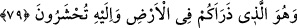

şükürde esas olan bu nimetleri ne için yaratıldı ise onun için kullanmaktır. Siz ise bunu
çok ihlâl ediyorsunuz.
el-Uyûn’da der ki: “Siz O’na ne az ne de çok şükrettiniz.”
Fakir (Bursevî) der ki: Bu böyledir. Çünkü “kıllet (azlık)” yokluk için de kullanılır.
Bu, kâfirlerin durumuna uygun düşmektedir.
Âyette üç mânâya işâret vardır:
1- Kulaklar, gözler ve gönüller gibi Allah’ın ihsan ve lütfettiği yüce nimetleri ortaya
koymak.
2- Bu nimetlere mukabil kullarından şükür taleb etmek.
3- Kullarının durumunu bildirmek. Çünkü onlardan şükreden azdır. Nitekim Allah
Teâlâ: “Kullarımdan şükreden azdır.” (Sebe, 34/13) buyurur.
Bu nimetlerin şükrü, nimet verene tâatte ve O’na kullukta kullanılmasıdır. Kulağın
şükrü, yasaklanan şeyleri dinlemekten korumakta ve ancak Allah için, Allah ile ve
Allah’tan dinlemekle olur.
Kulak, Kur’ân ve nasihatin geçit yeridir
O hâlde iftirâ, bâtıl söz gibi şeyleri duymamaya çalış
Gözün şükrü haram kılınan şeylere bakmaktan korunması ve ibret nazarıyla Allah için,
Allah ile ve Allah’a nazar etmesiyledir.
İki göz de Allah’ın kudretini görmeye yarar
Kardeşinin, dostunun ayıplarına karşı onları yumuver
Kalbin şükrü, onu kötü ahlâkın kirlerinden arıtmak (tasfiye) ve iki âlemden alâkasını
kesmektir. Böyle olunca kalb Allah’tan başkasını müşâhede etmez ve ancak Allah’ı
sever.
Sana gönül/kalb mücevherini emânet etmişler
Hakk’ın emânetini hırsızdan koru, sakın ola ki uyuma
79. Ve O, sizi yeryüzünde yaratıp türetendir. Sırf O’nun huzurunda
toplanacaksınız.
“Ve O, sizi yeryüzünde yaratıp türetendir.” Yani sizi yarattı ve orada tenâsül yoluyla
yaydı. Dağılıp parçalandıktan sonra başkasının değil, “Sırf O’nun huzûrunda
toplanacaksınız.” O halde size ne oluyor da O’na inanmıyor ve şükretmiyorsunuz?